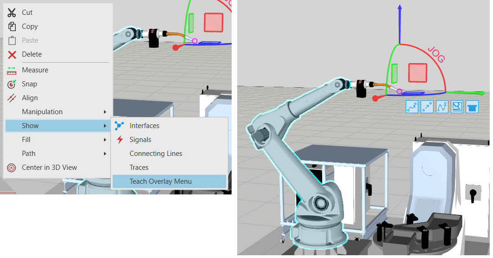

Fast Robot Teaching allows you to create statements in a robot program using actions in the Teach Overlay menu. The benefits are fast teaching of robot positions and simplified workflows for programming robots in the 3D world.
When using the Jog tool, you have a set of actions for adding statements to the active robot, for example linear and point-to-point motions. Clicking an action adds a new statement to the program of the robot. If you click the same action, the values of the previously added statement are used to create the new statement. If you click a different action, the statement uses its default values.

You can customize which actions are listed in the Teach Overlay menu. For example, you can have a list of actions for adding custom statements, calls to subroutines, and other commands. To customize the list of displayed actions, edit the configuration file of R-Pro 2.1, or use PythonAPI or .NET API.
Example. Configure application configuration file .
| <Site ItemId="VcTeachOverlayMenu"> <uxEntries> <UxItem ItemId="CloneTeachPtpMotionStatement"></UxItem> <UxItem ItemId="CloneTeachLinearMotionStatement"></UxItem> <UxItem ItemId="CloneTeachPathStatement"></UxItem> <UxItem ItemId="CreateHaltStatement"></UxItem> </uxEntries> </Site> |
Example. Add a menu item using PythonAPI.
| from vcApplication import * cmd_name = 'RobotGrasp' title = 'myGraspAction' tooltip_name = 'Add Grasp routine' icon_name = 'rAddProgramStatement' def OnAppInitialized(): cmduri = getApplicationPath() + cmd_name + '.py' cmd = loadCommand(cmd_name, cmduri) addMenuItem('VcTeachOverlayMenu', title, 1, cmd_name, tooltip_name, icon_name) |